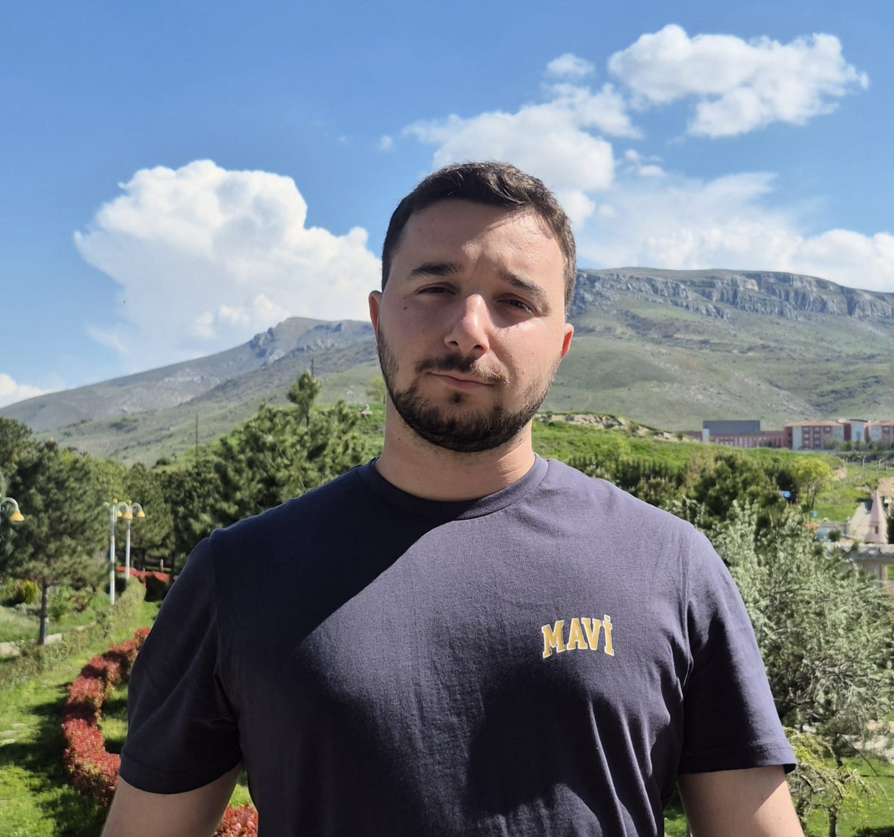
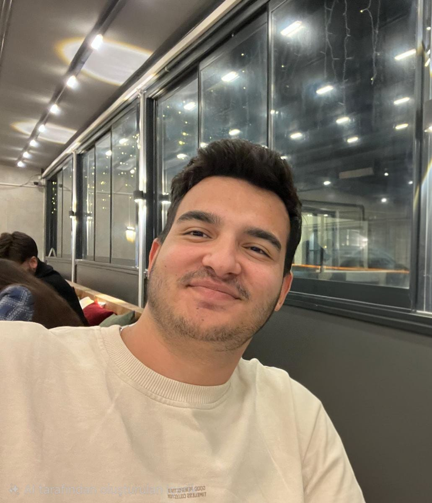
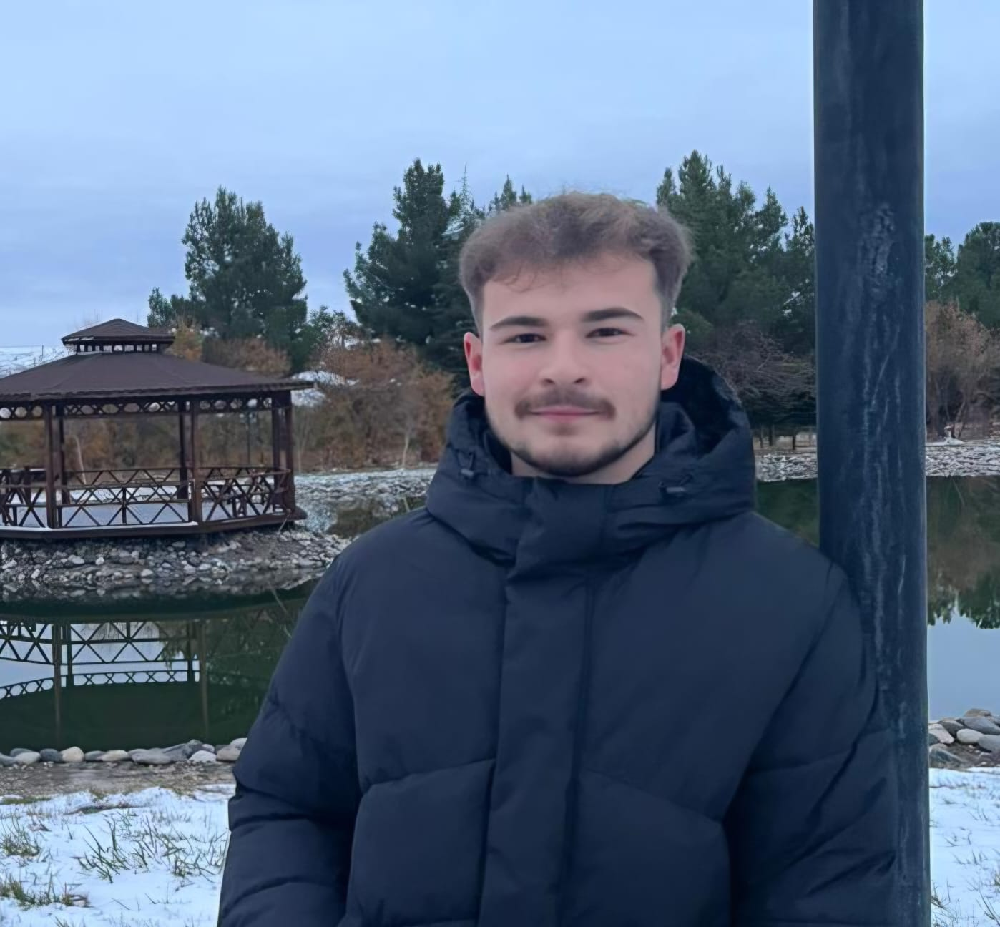

Kaen Ekibi Üyeleri
Farkli disiplinleri (Yapay Zeka, Elektronik, Mekanik) bir araya getiren TUBITAK 2209-B Solaris One ekibi.

Oguzhan Dilmac
Yapay Zeka & Kontrol
Inonu Universitesi
Bilgisayar Muhendisligi - 2. Sinif
📍 Trabzon
Projedeki Gorevi:
Yazilim Gelistirme: Goruntu isleme algoritmasinin paneldeki kir oranini %80 uzeri dogrulukla tespit etmesi; otonom kontrol sisteminin test ortaminda calismasi.
* Ayrica prototip uretimi, saha testleri ve sistem degerlendirme asamasinda ortak gorevli.
Nida Ozbey
Yapay Zeka & Goruntu Isleme
Inonu Universitesi
Bilgisayar Muhendisligi - 2. Sinif
📍 Elazig
Projedeki Gorevi:
Yazilim Gelistirme: Goruntu isleme algoritmasinin paneldeki kir oranini %80 uzeri dogrulukla tespit etmesi; otonom kontrol sisteminin test ortaminda calismasi.
* Ayrica prototip uretimi, saha testleri ve sistem degerlendirme asamasinda ortak gorevli.

Hamza Aslanbaba
Sensor & Elektronik
Inonu Universitesi
Elektrik-Elektronik Muh. - 2. Sinif
📍 Sivas
Projedeki Gorevi:
Elektronik Devre ve Sensor Entegrasyonu: Tum sensorlerin (kamera, ultrasonik, vantuz) devreye alinmasi ve %95 dogrulukla veri iletiminin saglanmasi.
* Ayrica prototip uretimi, saha testleri ve sistem degerlendirme asamasinda ortak gorevli.
Umut Ali Ozdemir
Sensor & Elektronik
Inonu Universitesi
Elektrik-Elektronik Muh. - 2. Sinif
📍 Trabzon
Projedeki Gorevi:
Elektronik Devre ve Sensor Entegrasyonu: Tum sensorlerin (kamera, ultrasonik, vantuz) devreye alinmasi ve %95 dogrulukla veri iletiminin saglanmasi.
* Ayrica prototip uretimi, saha testleri ve sistem degerlendirme asamasinda ortak gorevli.

Ilhan Emre Arslan
Mekanik Tasarim
Inonu Universitesi
Makine Muhendisligi - 2. Sinif
📍 Manisa
Projedeki Gorevi:
Mekanik Tasarim ve Modelleme: CAD ortaminda govde ve firca mekanizmasinin tamamlanmasi; tasarimin 3D ciktisinin alinmasi; uretime hazir model olusturulmasi.
* Ayrica prototip uretimi, saha testleri ve sistem degerlendirme asamasinda ortak gorevli.